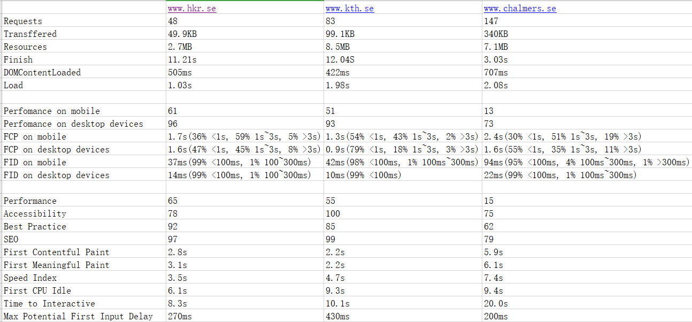

Reports from the course Software Develoopment for Web
S01
Q1:Did you before know about the techniques Git, GitHub, Markdown and/or GitHub Pages?
A1:I known Git, GitHub and GitHub Pages. But I didn't know Markdown.
Q2: Have you ever created websites before?
A2: I only used CSS and HTML for a web page design.
Q3: Briefly explain your experience and knowledge of web application development.
A3: I used HTML and CSS for a web page design when I was a freshman.
Web application development creats application programs that use remote servers. And those applications are delivered to the user's computer, mobiles or else devices through the Internet.
Q5:What is your TIL for this course section?
A5 : 1. I used a Git GUI tool which called SourceTree to commit codes or something else before the course. But now I can use cmd.exe to take those actions. It is much more convenience.
2. I know what Markdown is. It is a lightweight markup language with text formatting syntax.
3. JS can apply both on client side and server side.
4. PHP can create dynamic server side.
5. Ajax and websocket can update stock value in realtime, without reloading the page.
S02
Q1:Have you any previous experience of HTML, CSS and/or JavaScript?
A1:Yes. I used HTML and CSS for a web page design when I was a freshman. But I didn't learn JS untill this course.
Q2: Explain the role of HTML, CSS and JavaScript in web development.
A2: HTML works with the Structure and Framework. CSS works with Look and Format. JavaScript works with the Infrastructure.
Q3: Give a brief explanation of how the browser, the HTTP protocol and the web server interacts.
A3: At the beginning, the browser make connection to the web server using TCP protocol. Once connected, the browser will send a HTTP request, in form of a URL. The requests sends independently from each other(header and an empty line indicating the end of the header). The request is proccessesd by the server and a HTTPresponse is sent back to the browser.
Q4: What is your TIL for this course section?
A4: 1. I review relative knowledge about CSS, HTML and network(HTTP).
2. I learn the syntax about the Javascript. Now I can use Javascript, CSS and HTML to create webs.
S03
Q1:Do you have any previous experience of client side JavaScript?
A1:No.
Q2: Can you compare and relate the JavaScript language to any other language you know?
A2: JavaScript ia a script language and Java is a Object-Oriented language. In java, we should identify int, string or something else. But in JavaScript, we only use var, and the compiler will check the data type while runtime. The file extension of two languages are also differnt. JavaScript uses *.js, and Java uses *.class. What is more, JavaScript is much more flexible than Java. The length of array can't be changed after defining in Java, but it can be changed in JavaScript.
Q3: Describe how you worked with the coding exercise, what grade do you aim for and how did your code turn out to be?
A3: Firstly, I followed the teacher to finish the basic tasks. Then, I look through some pages about JavaScript to find some useful information about other tasks and try my best to finish them. In the first stage, I only want to get the grade 3. I meet some problems on it which take me a lot time to finish the tasks of grade 3. After I finished grade 3, I try my best to get grade 4. But I failed in grade 5.
Q4: What is your TIL for this course section?
A4: After this class, I know how to use fetch(), and how to use JavaScript to make website dynamic.
S04
Q1:Tell me about your previous experience on node/npm or any equal programming tools.
A1:I didn't use node/npm before.
Q2: How do you feel about working with JavaScript, Node and Express?
A2: JavaScript is much more flexible than Java. For example, I can change the length of array after defining it. And it is easy to use Node to test simple code without writing the codes into a file and it can help you to check the code sentence by sentence so that you can find the bug immediately. Node involves some base APIs which are difficult for a new hand to use, but Express encapsulates them, so we can use it easier.
Q3: Explain how you did take on the coding assignment, did you have a plan and did it work?
A3: I finished the example first to get the basic knowledge. Then I looked through the assignment and think what knowledge I need. Next, I went back to see examples and coding. It worked.
Q4:What grade did you aim for and was it a difficult level?
A4:I hope to get grade 5. But actually, grade 4 is also difficult for me.
Q5: What is your TIL for this course section?
A5: I learned about Node, Node Express and EJS. I can also organize codes in files and modules.
S05
Q1: How do you feel about PHP as a programming language?
A1: I think PHP is easier than Java. Because PHP has less concept.
Q2: Can you compare PP to other languages you know?
A2: 1. PHP has less concept than Java.
2. PHP don't need to identify the type of variables, but java need.
3. The suffix name of PHP file is .php, but in Java is .class.
4. PHP uses . to connect string, but Java uses +.
5. PHP has magic constants, like __DIR__, but Java don't have something like this.
Q3: Describe how you took on the coding exersice, what grade did you aim for and are you satisfied with the result.
A3: Before I coding, I watched the video. Then I looked the example codes and imitated them to coding. My goal is to get grade 5, but if I got it in final I won't be satisfied because I can find all methods in the example codes.
Q4: What is your TIL for course section?
A4: I know how to write codes using PHP. And I can rebuild webpages from HTML to PHP and connect pages to a mySQL database through PHP. What is more, I can use CRUD operations to the database using PHP and HTML forms.
S06
Q1: What is your own opinion on popularity of programming languages and what are your thoughts of future popularity among programming language?
A1 : I think now popular programming languages are JavaScript, Java, Python, C++， C, PHP, Shell, Kotlin, C#, .NET... In the future, JavaScript, Java, Python, C#, Kotlin and .NET can still be popular. But according some data about the language which developers love and want to learn, I guess Rust and Go can also be popular in future.
Q2: What will be your own choice for selecting future programming languages?
A2: My choice is Python. Because the Python is easy to learn compare to other programming languages. And it can use less codes to write an application or something else.
Q3: Do your own investigation on https://trends.google.com (Links to an external site.) to customize your own comparison on programming languages (or frameworks) and elaborate on the results.
A3: 
The picture above illustrates the result of compare Python to Java, PHP and JavaScript and we can find Python is a hot search word. The number of Python is always higher than Java, PHP and JavaScript. And we also find the number of Python, Java, PHP, Javascript are all rising from the end of 2019 to the beginning of 2020 but the number of Python rose most significantly. According to this, I think Python is more popular than Java, PHP and JavaScript in 2020.
Q4: If you were to recommend a language/framework/technology to your potential employer and your next large project, what would it be and how would you “sell it”?
A4: Python programming language develops quickly and the language is concise and it is easy to read and understand. Python is usually used in various fields and is a universal language. Whether it is websites, game development, robotics, AI, big data, cloud computing or some high-tech space shuttle controls, Python language can be used. Besides, it is not difficult for graphical programming using Python and Python offer various APIs and tools.
Q5: What is your TIL for this course section?
A5: I know some popular JavaScript and PHP frameworks. I also reviewed something about MVC.
S07
Q1: Try to explain the platform .NET (C#, ASP.NET) to a skilled programmer, but newbie to this Microsoft technology.
A1: .NET is a free, cross-platform, open source developer platform for building many different types of applications. .NET Framework supports websites, services, desktop apps, and more on Windows.
What is more, you can use 3 languages to write applications: C#, F# and Visual Basic.
Q2:Elaborate by comparing .NET technologies with the other technologies we learned during the course.
A2: Language:
The biggest difference between PHP, JAVA, and C # is the different execution methods. There are also some differences in the language itself, such as whether it is strongly typed, whether it can be dynamically compiled, whether it is multi-threaded, whether it is distributed, whether it is movable, and so on. In addition, there are certain differences in the database with language. PHP usually uses MySQL database, JAVA usually uses MySQL or Oracle, and C # is a product of Microsoft, usually using Microsoft-related database SQL Server or Access. Sometimes Sqllite database is also used.
Platform:
For desktop applications, PHP is not very applicable, and JAVA does not have better development tools for desktop applications. In this regard, the .NET platform has a better advantage. As for implementing some complex low-level business, PHP is not as good as JAVA and .NET, but it has a better advantage when it is used as a front-end presentation layer. In addition, JAVA and .NET (mono) can be cross-platform, .NET can also cross languages.
Q3:Describe how you took on the coding exercise, what grade did you aim for and are you satisfied with the result?
A3: I just hope I can get Grade 3. Because it is a big challenge for me especially when I did the web pplication. It took me a lot of time to connect the database. I used Visual Studio 2019 to create the web application, it is different from teacher did.
Q4:What is your TIL for this course section
A4: Now I know .NET and ASP.NET. Meanwhile learned about MVC. and I can use C# 4 to create console application and web application.
S08
Q1: Analyse a set of websites from the aspect of performance and elaborate on your findings.
A1:
This data sheet includes three parts. The first part of the data comes from the Devtools network tab, the second part comes from PageSpeed Insights, and the last part comes from Lighthouse.
I choose those three websites because they are all school official websites. They have similarities.
Q2:What is your TIL for this course section?
A2: 1. I learned how to use Devtools network tab, PageSpeed Insights and Lighthouse those three tools to evaluate performance of websites.
S09
Q1: Elaborate on a few (3-5) different security issues or concerns, from your own experience, related to web application security and relate them to the OWASP top ten.
A1: 1. Broken Authentication and Session Management. Application timeout is set incorrectly. I used to visit a website using a public computer. When I left, instead of clicking to exit, I closed the browser directly. After an hour my friend was able to authenticate using the same browser.
2. Sensitive Data Exposure. An internal or external attacker enters the password database of the system. The user passwords stored in the database are not encrypted, and all user passwords are obtained by the attacker.
3. Security Misconfiguration.The application server administrator console was not removed after the automatic installation. And the default account has not been changed. The attacker found a standard administrator page on the server of the attacked object and logged in with the default password, thereby taking over the server of the attacked object.
Q2:Summarize by providing your own guidelines to a new web programmer on the topic “The essential guidelines to follow to create secure web applications”.
A2: 1. Run the application with minimal privileges.
2. Know your users.
3. Prevent malicious user input.
4. Secure database access.
5. Create a security error message.
6. Secure confidentiality.
7. Safe use of cookies.
8. Protect against denial of service threats.
9. Back up often and keep it physically secure.
10. Keep the web server computer physically secure so that unauthorized users cannot access, shut down or accept it.
11. Run a virus checker that monitors inbound and outbound traffic.
12. Use firewall.
13. Establish and implement a policy that prohibits users from recording passwords in an easy-to-find location.
14. Close unused ports and close unused services.
Q3:What is your TIL for this course section?
A3: I learned some hacker terminologies, OWASP top 10 and some examples of some attacks.